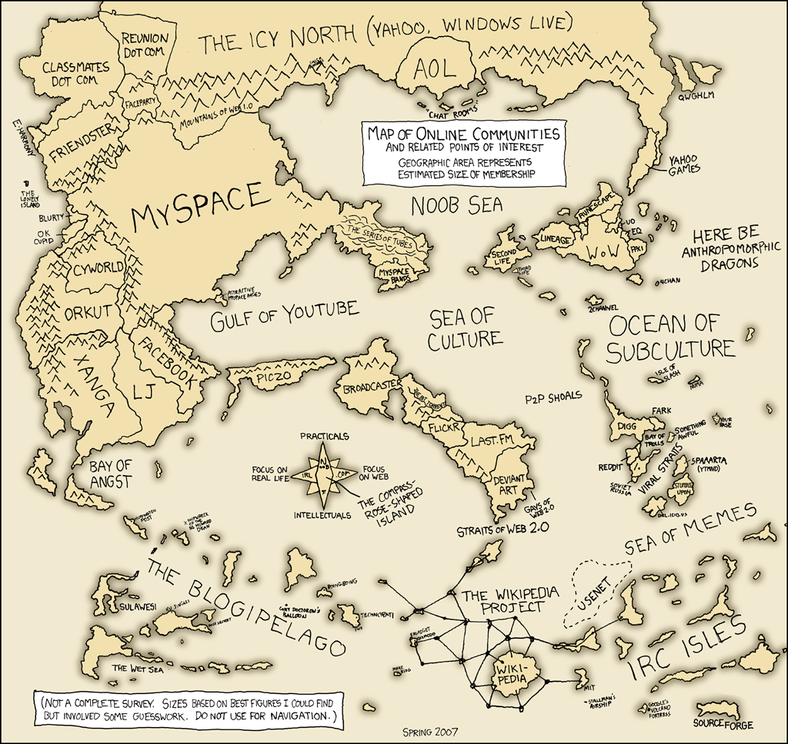

Packages Versus Projects in Julia
One of Julia's greatest strengths is its package manager, Pkg.jl. My goal here is to give new Julia users some helpful tips to get the most out of Pkg.jl right off the bat. To dive deeper, please check out the official documentation.
What is a Package?
A package is a code base that performs some function. I.e., a package does a job, does it well, and nothing more. It is modular.
When multiple things need to be done, we sensibly organize the appropriate code into separate packages. Furthermore, we give these separate packages separate names so that we can understand what job they do well.
Say you want to work with Hyper Text Markup Language (HTML). HTTP.jl can help send requests and read responses.
Say you want to work with JavaScript Object Notation (JSON). JSON3.jl can help read and write data in this format.
Say you want to fetch random XKCD comic (there is no meaning). XKCD.jl can deliver comics to you. The beautiful thing is, that it does so by using HTTP.jl in combination with JSON3.jl.
Packages are the building blocks of the Julia ecosystem. There are many great packages out there, and the ease of creating, distributing, and composing packages allows the ecosystem to rapidly grow.
What is a Project?
A project is what you create to do stuff.
Slightly more formally, a project is any Julia code base with its own environment. In general, it is always a good idea to create an new environment for new projects. This will minimize the chances of package conflicts. Luckily, creating a new project with a dedicated environment is easy to do. We'll quickly walk through the steps to create a new project named ImportantWork.
After you have fired up a Julia REPL, indicate that we'll be using the package manager (we'll focus only on the most idiomatic way of doing this for now, but there is a Pkg REPL mode accessible with ] detailed in the official docs).
julia> using PkgNow to create our project.
julia> Pkg.generate("ImportantWork")The output looks something like this:
Generating project ImportantWork:
ImportantWork/Project.toml
ImportantWork/src/ImportantWork.jl
Dict{String, Base.UUID} with 1 entry:
"ImportantWork" => UUID("4b610261-c434-4966-b823-52987c24b398")The Julia package manager just generated:
a directory,
ImportantWork⇒ where everything for the project livesa subdirectory,
ImportantWork/src⇒ for building our code basea file,
ImportantWork/src/ImportantWork.jl⇒ a module (thinkmain)a file,
ImportantWork/Project.toml⇒ for describing the environmenta UUID we won't worry about for now
Let's step into our new project with cd.
julia> cd("ImportantWork")And check out Project.toml.
julia> edit("Project.toml")The file contains some basic information about the project's environment.
name = "ImportantWork"
uuid = "4b610261-c434-4966-b823-52987c24b398"
authors = ["Your Name <you@example.com>"]
version = "0.1.0"To begin working with this new environment, simply activate it.
julia> Pkg.activate(".") # the . here means 'this directory'Now we can continue to the important project work. To do so, we'll need the important XKCD.jl package. So let's add it to the project.
julia> Pkg.add("XKCD")Updating registry at `~/.julia/registries/General`
Resolving package versions...
Updating `~/Repos/ImportantWork/Project.toml`
[4bc7fa8b] + XKCD v1.0.1
Updating `~/Repos/ImportantWork/Manifest.toml`
[cd3eb016] + HTTP v0.9.17
[83e8ac13] + IniFile v0.5.0
[0f8b85d8] + JSON3 v1.9.2
[739be429] + MbedTLS v1.0.3
[69de0a69] + Parsers v2.2.0
...
[8dfed614] + Test
[cf7118a7] + UUIDs
[4ec0a83e] + Unicode
[c8ffd9c3] + MbedTLS_jll
Precompiling project...
1 dependency successfully precompiled in 1 seconds (9 already precompiled)The Project.toml can again tell us what changed. There are 2 new lines.
[deps]
XKCD = "4bc7fa8b-4ef2-4643-8c8b-cef036f85839"Indicating that our project has a new dependency.
We are now free to use the package in our project.
julia> edit("src/ImportantWork.jl")Paste the following code in the file. Save and quit.
module ImportantWork
using XKCD
export meaning_of_life
export life_online
meaning_of_life() = XKCD.Comic(42)
life_online() = XKCD.Comic(256)
end # moduleFinally, we can get the answers we seek. Furthermore, if we are sure to include the Project.toml then we can share our important work with others. Then they too can get the answers.
julia> using ImportantWork
julia> meaning_of_life()
julia> life_online()